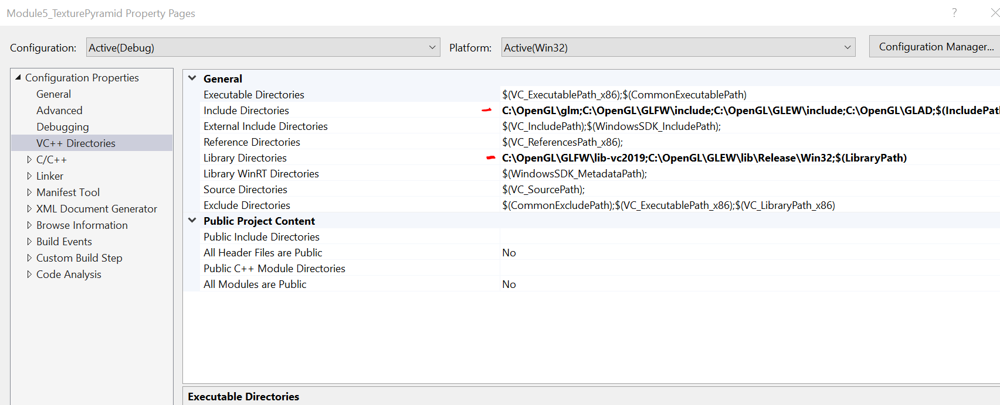
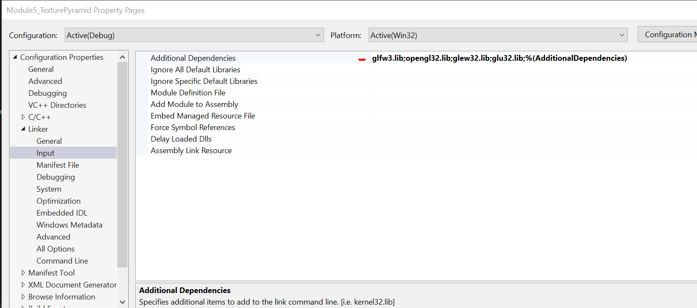

Data Structures and Algorithms
Description:
- Add animation by having the light source travel around the pyramid.
Narrative:
For Algorithms and Data Structures, I am using a project from CS 330 – Computational Graphics and Visualization. In this project, I was to create and render a 3D pyramid with a light source. The enhancement to this project is to have the light source travel around the pyramid. The reason I chose this project to demonstrate Algorithms and Data Structures is because of the use vectorization. There are several pieces that need to be given a location in the “space” of the window, which is then sent to the GPU to render. To name a few of these variables and functions (lines 81-93) are the mesh (line 32, 606-669) or object, texture (line 44, 680-718), object color (line 65), light color (line 66), light position (lines 69-70) and camera (line 54). To render these to the screen, we also need the vertex shader source (lines 97-122) which calculates the model, view and projection, a fragment shader source (lines 126-172) to calculate light and color.
When learning to work with OpenGL, the most difficult part for me was implementing multiple objects. I knew that I could create a single object by calculating where I wanted the vertices in a 3D space to then create the triangle that would render a plane then build the objects from there. I found that in order to create multiple objects, I needed to create multiple buffer objects, meshes and textures, each with their own programId and then sent to the URender() function (line 498). Also, in another project for this course, with symmetrical designing, I found that all I needed to do was to create a single mesh and then repeat the mesh three times and rotate it 90 degrees each time. With that, in order to accomplish my enhancement for this project, I had to perform the same operation, but using gdeltaTime (lines 502-509). This is taking the angularVelocity and multiplying it by gdeltaTime and the y-axis, then multiplied by the lightPosition for x, y and z then updating the light’s position.
In order to run this application, you will need to copy the attached OpenGL and learnOpengl folders to your C:/ Drive. All dependencies and necessary links need to be configured by clicking the source folder then properties. The following need to be included:
 